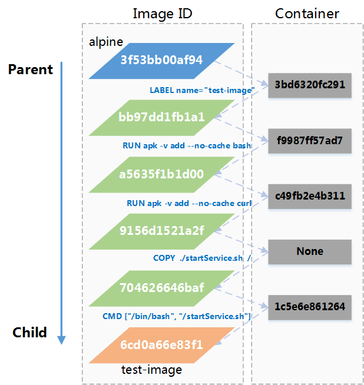

Docker
Prerequisites
- Windows 10 with WSL 2
- Docker Desktop
- Windows Terminal (or other)
What are containers?
Containers
- Standard unit of software
- Lightweight
- Portable
- open-source
Container & VM

Architecture

Let's get started
let's get started
docker versionClient:
Version: 19.03.8
API version: 1.40
...
Server: Docker Engine - Community
Engine:
Version: 20.10.2
API version: 1.41 (minimum version 1.12)
...
docker run
docker run --name hello-world alpine:3 /bin/echo "Hello, world!"output:
$ docker run --name hello-world alpine:3 /bin/echo "Hello, world!"
Hello, world!output (if image had to be pulled):
$ docker run --name hello-world alpine:3 /bin/echo "Hello, world!"
Unable to find image 'alpine:3' locally
3: Pulling from library/alpine
4c0d98bf9879: Pull complete
Digest: sha256:08d6ca16c60fe7490c03d10dc339d9fd8ea67c6466dea8d558526b1330a85930
Status: Downloaded newer image for alpine:3
Hello, world!basic commands
-
list all containers
docker ps -a -
check logs
docker logs hello-world -
auto-cleanup
docker run --rm alpine:3 /bin/echo "Hello, world!" -
list containers
docker ps -a -
remove exited container
docker rm -f hello-world
process isolation
-
list host processes:
ps aux$ ps aux root 1 0.0 0.0 1168 840 ? Sl 10:37 0:00 /init root 11 0.0 0.0 888 80 ? S 10:37 0:00 /init root 71 0.0 0.0 1252 352 ? Ss 11:13 0:00 /init root 72 0.0 0.0 1252 360 ? S 11:13 0:00 /init karol 73 0.0 0.0 11156 6464 pts/0 Ss 11:13 0:00 -bash karol 300 0.0 0.0 20684 13308 pts/0 S+ 12:17 0:01 python -m SimpleHTTPServer 8000 root 310 0.0 0.0 1256 356 ? Ss 12:27 0:00 /init root 311 0.0 0.0 1256 364 ? S 12:27 0:00 /init karol 312 0.0 0.0 11220 6356 pts/1 Ss+ 12:27 0:00 -bash root 627 0.0 0.0 1256 356 ? Ss 12:43 0:00 /init root 628 0.0 0.0 1256 364 ? R 12:43 0:00 /init karol 629 0.0 0.0 10188 5140 pts/2 Ss 12:43 0:00 -bash root 760 0.0 0.0 1176 360 ? Ss 12:43 0:00 /init root 761 0.0 0.0 0 0 ? Z 12:43 0:00 [init]root 763 0.0 0.0 0 0 ? Z 12:43 0:00 [init] root 782 0.0 0.0 1176 368 ? S 12:43 0:00 /init karol 1208 0.0 0.0 10860 3472 pts/2 R+ 16:42 0:00 ps aux
process isolation
-
start interactive shell:
docker run -it --rm alpine:3$ docker run -it --rm alpine:3 / # _
process isolation
-
list running processes:
ps aux$ docker run -it --rm alpine:3 / # ps aux PID USER TIME COMMAND 1 root 0:00 /bin/sh 9 root 0:00 ps aux
operating system
-
inside the container:
cat /etc/os-release/ # cat /etc/os-release NAME="Alpine Linux" ID=alpine VERSION_ID=3.13.1 PRETTY_NAME="Alpine Linux v3.13" HOME_URL="https://alpinelinux.org/" BUG_REPORT_URL="https://bugs.alpinelinux.org/" -
on the host:
cat /etc/os-release$ cat /etc/os-release NAME="Ubuntu" VERSION="20.04.1 LTS (Focal Fossa)" ID=ubuntu ID_LIKE=debian PRETTY_NAME="Ubuntu 20.04.1 LTS" VERSION_ID="20.04" HOME_URL="https://www.ubuntu.com/" SUPPORT_URL="https://help.ubuntu.com/" BUG_REPORT_URL="https://bugs.launchpad.net/ubuntu/" PRIVACY_POLICY_URL="https://www.ubuntu.com/legal/terms-and-policies/privacy-policy" VERSION_CODENAME=focal UBUNTU_CODENAME=focal
Container ephemerality
-
start interactive shell
docker run -it --rm alpine:3 -
write current date to a file
date > /opt/test.txt -
print the contents of the file
cat /opt/test.txt/ # cat /opt/test.txt Sun Feb 7 16:12:00 UTC 2021 -
exit the container
exit
Container ephemerality
-
run the container again
docker run -it --rm alpine:3 -
print the contents of the file
cat /opt/test.txt/ # cat /opt/test.txt cat: can't open '/opt/test.txt': No such file or directory
Container images
image layers
$ docker pull redis
Using default tag: latest
latest: Pulling from library/redis
a076a628af6f: Downloading [==============> ] 8.1MB/27.11MB
f40dd07fe7be: Download complete
ce21c8a3dbee: Download complete
ee99c35818f8: Downloading [==================> ] 3.644MB/9.702MB
56b9a72e68ff: Download complete
3f703e7f380f: Waitingoverlayfs

Dockerfile
-
Create workspace for building image
mkdir hello-dockercd hello-docker -
Create simple
Dockerfilecat > Dockerfile << EOF FROM alpine:3 CMD /bin/echo "Hello, World!" EOF -
Inspect the file
cat Dockerfile$ cat Dockerfile FROM alpine:3 CMD /bin/echo "Hello, World!"
docker build
-
Build conatiner image
docker build -t hello-docker .$ docker build -t hello-docker . [+] Building 0.2s (5/5) FINISHED => [internal] load build definition from Dockerfile 0.1s => => transferring dockerfile: 39B 0.0s => [internal] load .dockerignore 0.1s => => transferring context: 2B 0.0s => [internal] load metadata for docker.io/library/alpine:3 0.0s => CACHED [1/1] FROM docker.io/library/alpine:3 0.0s => exporting to image 0.0s => => exporting layers 0.0s => => writing image sha256:59e74bbdf878acba850f2167387f0e06f6fc5a207fd6ba1d699e087f72be5d 0.0s

Image Layers
Available images
list available images
docker images$ docker images
REPOSITORY TAG IMAGE ID CREATED SIZE
hello-docker latest 10de1a6744f5 5 minutes ago 5.61MB
alpine 3 e50c909a8df2 9 days ago 5.61MBinspect image
docker inspect hello-dockerdocker run
run container off created image
docker run --rm hello-docker$ docker run --rm hello-docker
Hello, World!Where to look for images?
Docker image reference:
<registry URL>/<image repository>:<version tag>- Docker Hub: https://hub.docker.com/
- Quay.io: https://quay.io/search
ElasticSearch + Kibana
ElasticSearch
Start ElasticSearch container
docker run --rm elasticsearch:6.8.13$ docker run --rm elasticsearch:6.8.13
[2021-02-07T17:53:07,999][INFO ][o.e.d.DiscoveryModule ] [LK2I0Ya] using discovery type [zen] and host providers [settings]
[2021-02-07T17:53:08,587][INFO ][o.e.n.Node ] [LK2I0Ya] initialized
[2021-02-07T17:53:08,588][INFO ][o.e.n.Node ] [LK2I0Ya] starting ...
[2021-02-07T17:53:08,666][INFO ][o.e.t.TransportService ] [LK2I0Ya] publish_address {172.17.0.2:9300}, bound_addresses {0.0.0.0:9300}
[2021-02-07T17:53:08,679][INFO ][o.e.b.BootstrapChecks ] [LK2I0Ya] bound or publishing to a non-loopback address, enforcing bootstrap checks
ERROR: [1] bootstrap checks failed
[1]: max virtual memory areas vm.max_map_count [65530] is too low, increase to at least [262144]ElasticSearch
Let's add some options
docker run --rm \
-e 'discovery.type=single-node' \
elasticsearch:6.8.13$ docker run --rm -e 'discovery.type=single-node' elasticsearch:6.8.13
[2021-02-07T18:01:16,992][INFO ][o.e.d.DiscoveryModule ] [ncS-Myw] using discovery type [single-node] and host providers [settings]
[2021-02-07T18:01:17,572][INFO ][o.e.n.Node ] [ncS-Myw] initialized
[2021-02-07T18:01:17,572][INFO ][o.e.n.Node ] [ncS-Myw] starting ...
[2021-02-07T18:01:17,654][INFO ][o.e.t.TransportService ] [ncS-Myw] publish_address {172.17.0.2:9300}, bound_addresses {0.0.0.0:9300}
[2021-02-07T18:01:17,670][WARN ][o.e.b.BootstrapChecks ] [ncS-Myw] max virtual memory areas vm.max_map_count [65530] is too low, increase to at least [262144]
[2021-02-07T18:01:17,694][INFO ][o.e.h.n.Netty4HttpServerTransport] [ncS-Myw] publish_address {172.17.0.2:9200}, bound_addresses {0.0.0.0:9200}
[2021-02-07T18:01:17,694][INFO ][o.e.n.Node ] [ncS-Myw] started
[2021-02-07T18:01:17,793][WARN ][o.e.x.s.a.s.m.NativeRoleMappingStore] [ncS-Myw] Failed to clear cache for realms [[]]
[2021-02-07T18:01:17,834][INFO ][o.e.g.GatewayService ] [ncS-Myw] recovered [0] indices into cluster_state
[2021-02-07T18:01:17,921][INFO ][o.e.c.m.MetaDataIndexTemplateService] [ncS-Myw] adding template [.triggered_watches] for index patterns [.triggered_watches*]
[2021-02-07T18:01:17,982][INFO ][o.e.c.m.MetaDataIndexTemplateService] [ncS-Myw] adding template [.watch-history-9] for index patterns [.watcher-history-9*]
[2021-02-07T18:01:18,026][INFO ][o.e.c.m.MetaDataIndexTemplateService] [ncS-Myw] adding template [.watches] for index patterns [.watches*]
[2021-02-07T18:01:18,070][INFO ][o.e.c.m.MetaDataIndexTemplateService] [ncS-Myw] adding template [.monitoring-logstash] for index patterns [.monitoring-logstash-6-*]
[2021-02-07T18:01:18,121][INFO ][o.e.c.m.MetaDataIndexTemplateService] [ncS-Myw] adding template [.monitoring-es] for index patterns [.monitoring-es-6-*]
[2021-02-07T18:01:18,157][INFO ][o.e.c.m.MetaDataIndexTemplateService] [ncS-Myw] adding template [.monitoring-alerts] for index patterns [.monitoring-alerts-6]
[2021-02-07T18:01:18,198][INFO ][o.e.c.m.MetaDataIndexTemplateService] [ncS-Myw] adding template [.monitoring-beats] for index patterns [.monitoring-beats-6-*]
[2021-02-07T18:01:18,237][INFO ][o.e.c.m.MetaDataIndexTemplateService] [ncS-Myw] adding template [.monitoring-kibana] for index patterns [.monitoring-kibana-6-*]
[2021-02-07T18:01:18,332][INFO ][o.e.l.LicenseService ] [ncS-Myw] license [6b8088e7-2557-41a0-8633-21015d3e134c] mode [basic] - valid